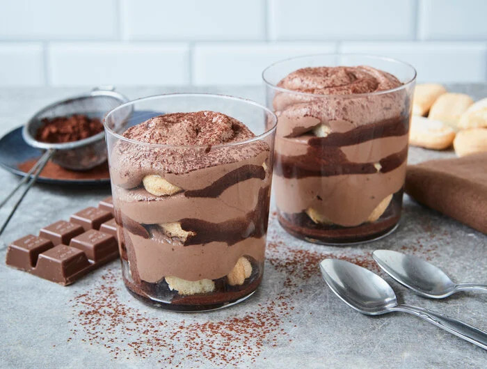

Chocolate Tiramisu

Description
A nice alternative tiramisu recipe for people who
don't like coffee and want something a bit
sweeter.
Ingredients
- 300ml of milk
- 4 table spoons of cocoa
powder
- 1 table spoons of sugar
- 150g of baking chocolate
- 250g of mascarpone
- 250g of sweet cream
- 1 packet of vanilla sugar
- 200g of ladyfingers
Steps
- Boil the milk, then add cocoa powder and
sugar.
- After mixing the milk, cocoa and sugar,
put the hot cocoa aside for now.
- Coarsely chop the chocolate and melt it in a
metal, glass or porcelain bowl over a pot of
hot (but not boiling) water.
- Put the pot and bowl aside.
- Mix mascarpone, sweet cream and vanilla sugar.
Now stir it until it has the consistency of
whipped cream.
- Pour the molten chocolate into the cream and
mix it.
- After dipping the ladyfingers into the
cocoa, put them into a fitting dish.
- Spread some of the cream onto the ladyfingers,
then alternate between layering ladyfingers
and cream into the dish until you run out.
- Put the entire dish into the fridge for at
least 1 hour.
- Sprinkle some cocoa powder onto the tiramisu
before serving it.